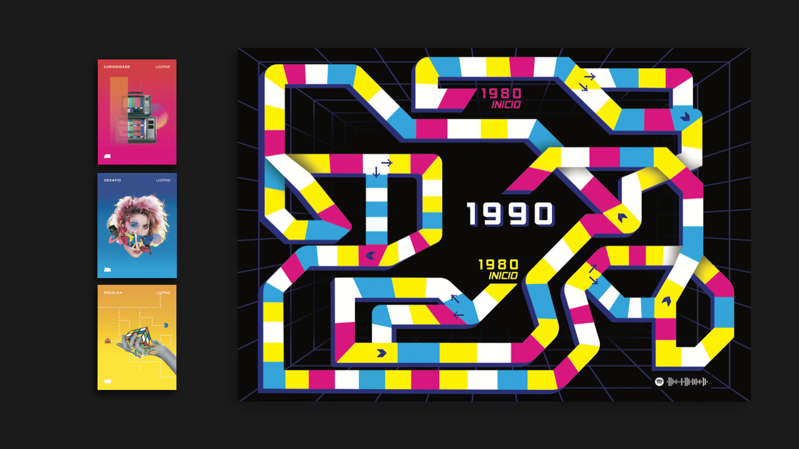
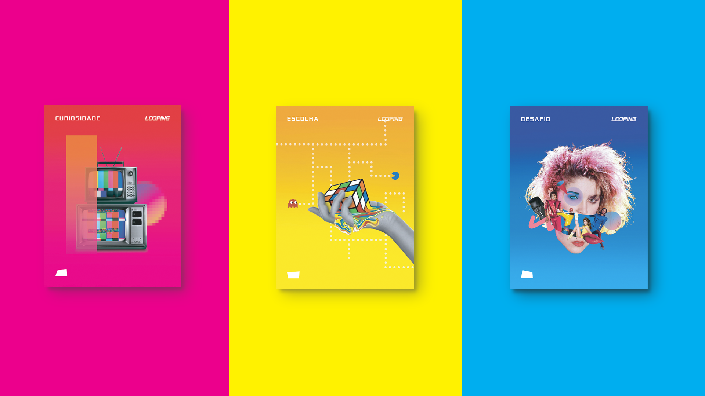
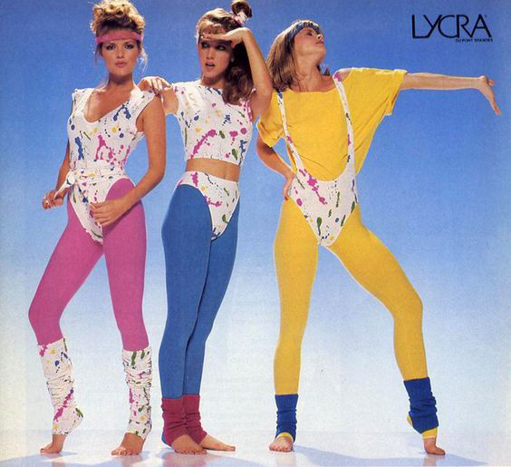
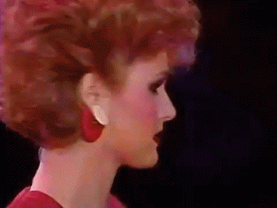
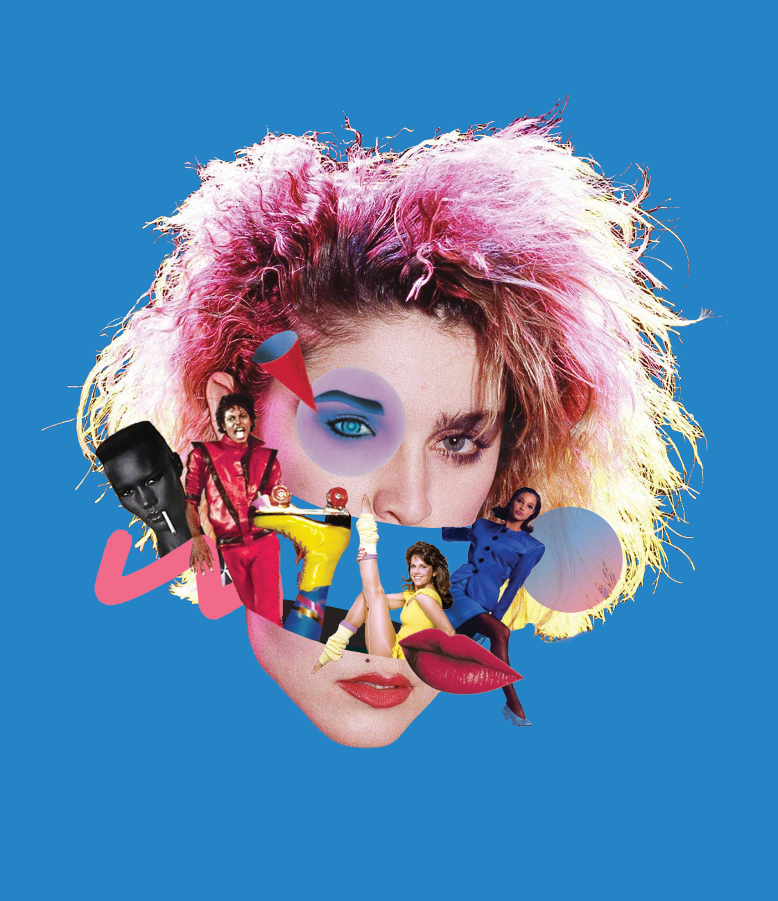
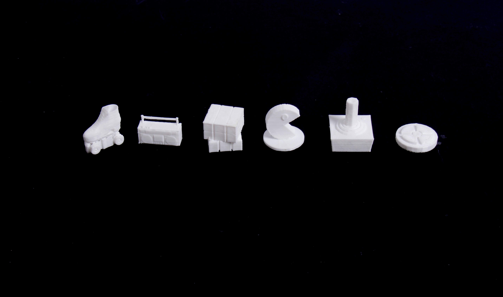

looping
Projeto desenvolvido por: Giovana Jabur Abrahão, Giulia Golfari, Natália Farah e
Nathallie Carramillo para a disciplina Lúdico.
com o objetivo de sobreviver aos anos 80, Looping é um jogo de aventura com
desafios, curiosidades e escolhas baseados na estética, acontecimentos e fatos da
década. o jogo estabelece uma relação com entre a geração que viveu na época,
com a geração atual que consome a cultura dos anos 80. brincando com as ideias
de viagem no tempo, nostalgia e tecnologia o jogo acontece em um tabuleiro que
deu muito trabalho para ser feito, e cartas que também deram muito trabalho. um
diferencial: com uma playlist temática da época, o jogo fica ainda mais divertido ao
ler o código do Spotify e deparar-se com Madonna, Michael Jackson e Chitãozinho
e Xororó (sim, Evidências é dos anos 80). após muitos sábados cortando e colando
cartas e muitas horas de impressão 3D, Looping teve um resultado eletrizante e
supimpa!






a.TUA quebra
as expectativas.
é influenciada pelos maiores nomes da arte performática como Marina Abramovic, Carlos Martiel,
Chris Burden e Lygia Clark que chocam, impressionam
e expressam.